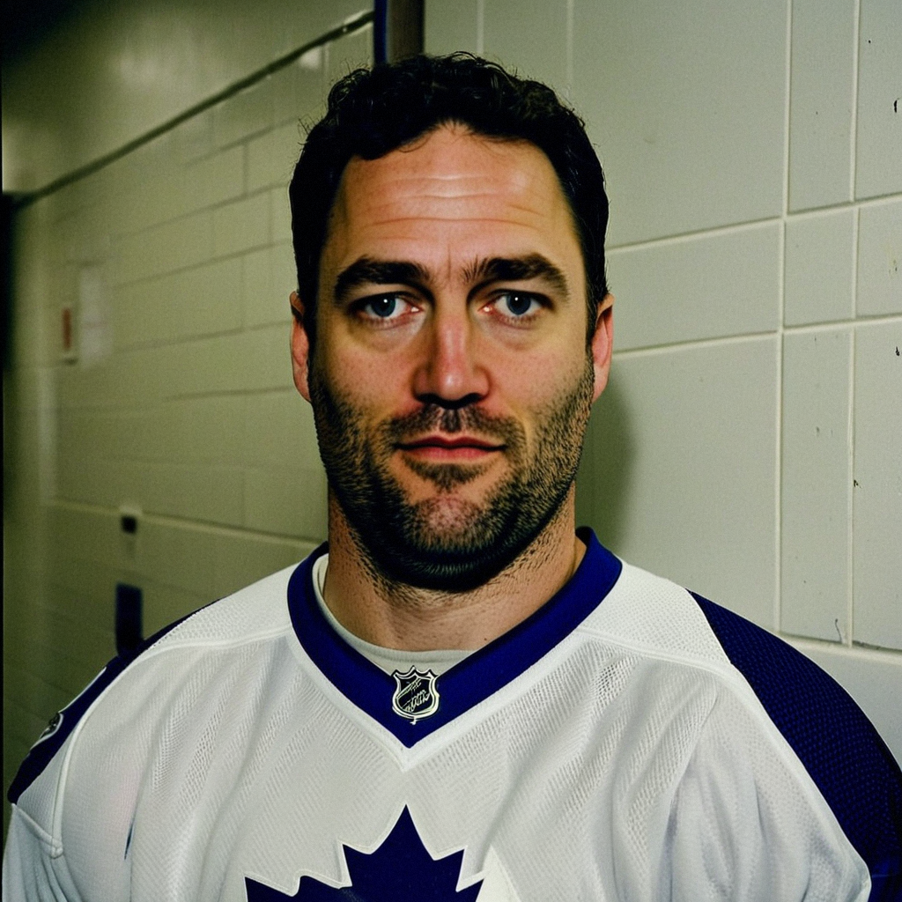

Belfour's 15th Win and the One Save He Wanted Back
The 39-year-old stopped 20 of 21 in a 7-1 rout of Calgary and told Marcus Bell the one goal that went in was the only number on the scoresheet that mattered to him.
 Marcus BellRinkside reporter · The Tunnel
Marcus BellRinkside reporter · The Tunnel
2:57 · synthetic voices, produced from the record · download
Ed Belfour [55] and the  Toronto Maple Leafs Maple Leafs bounced back from Thursday's 2-3 loss to Boston with a 7-1 win over Calgary on Friday night, moving to 33-8-1 and 73 points. Belfour allowed one goal on 21 shots for his 15th win, fifth game this season without a shutout after five blanks in his previous 17 starts. He stopped for The Tunnel in the tunnel after the game.
Toronto Maple Leafs Maple Leafs bounced back from Thursday's 2-3 loss to Boston with a 7-1 win over Calgary on Friday night, moving to 33-8-1 and 73 points. Belfour allowed one goal on 21 shots for his 15th win, fifth game this season without a shutout after five blanks in his previous 17 starts. He stopped for The Tunnel in the tunnel after the game.
Transcript
Marcus Bell here in the tunnel with Ed Belfour. Seven and one, your team scores at will, the building's happy. But they got one past you. What happened?
Yeah, well, he came across the faceoff circle, I was set, and I just lost the puck for, I don't know, half a second. That's all it takes up here. Half a second. And the next thing I know it's top of the crease and I'm reaching. I'll watch it tonight, I'll figure it out, and tomorrow it's gone. But right now, no. Right now it's there.
Fifteen wins in 18 starts, five shutouts. One goal on a 7-1 night. Does that still get under your skin?
You know, everyone looks at the 7 and the 1 and thinks, easy night, Ed's got the rest of the evening off. It's not, you know, 21 shots is 21 shots. And the one that goes in, that's the one I remember all the way home. The seven? I put those away. The one I keep.
Is that the veteran in you? You've seen enough blowouts to know a soft one can creep into a playoff game?
Yeah, and no. I mean, the 15 wins aren't there because I'm thinking about April in a January game. They're there because the guys in front of me are, they're doing the work. Gary's been living in their defenseman's hip tonight. Mats is winning battles in the corners. Petr's making the first pass clean. I'm just... square. Tracking. The one I didn't track, that's on me. And that's the part I'll fix tonight.
Let me ask about the third period specifically. The game's out of reach. What are you competing for in those minutes?
You know, people think a goalie's job ends at four or five. It doesn't. The third period is where you're honest with yourself. When the game's over, it's easy to go through the motions, let a pass through your legs, lose your angle because nobody's really testing you. I don't. I got a couple shots from the blue line in the third that I froze clean and that felt good. Small things. But when you've got 42 minutes like tonight, the third is where you build the habits you need when it's one-nothing in April. So yeah, I'm competing in the third. I just don't tell anyone.
You told Jan Kowalczyk in December, after the two-goal game at Calgary, that the team doesn't lose on your average nights. You've got one tonight. Where does that put tonight?
Yeah, I remember. I said that on the road, in Calgary, in their room, with a long bus ride ahead of me. You say a lot of things on a bus. Look, the team's 33 and 8. I still believe the team doesn't lose on my average nights. I just wanted the blank tonight. Five shutouts, I want six. That's not about the record. That's between me and the net, and tonight the net won one.
Gaborik had two goals and three points, Richards three assists, Roberts three points. When the offense is spread that thin, does it change how you play back there?
You relax a little. Not much, a goalie never relaxes, you know that. But when Marian's putting them in from the slot and Brad's feeding guys open at the point and Gary's making the whole back end work for their living, you're not watching for a three-on-one the way you would in a 1-0 game. You've got a cushion. You can take a breath. But I'm still working the same angle, the same reads. The 15 wins don't come from coasting in a 7-1 game. They come from making the first save in a 1-0 game and the guys in front doing what they did tonight.
Ed Belfour, fifteen and three, thirty-three and eight. Marcus Bell, post-game, Toronto. Back to you.